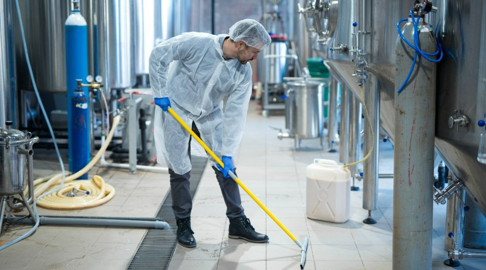
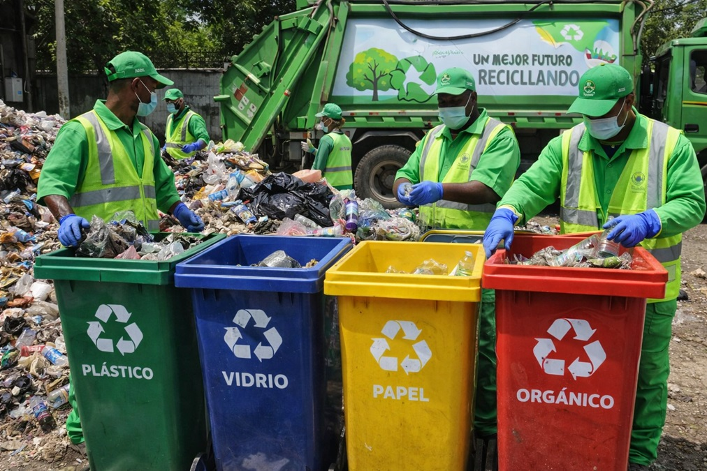

ASEO GENERAL EN PLANTA
El aseo general en planta no es solo una cuestión de apariencia; es un pilar fundamental de la eficiencia
operativa y la seguridad industrial. Un entorno de producción limpio reduce el riesgo de accidentes, evita
la
contaminación cruzada y prolonga la vida útil de la maquinaria.
¿En qué consiste nuestro servicio / proceso?
Nuestro protocolo de limpieza integral aborda todas las áreas críticas de la instalación,
asegurando el
cumplimiento de las normativas de seguridad e higiene vigentes.
- Limpieza de Superficies y Estructuras
- Pisos Industriales: Desengrasado y lavado profundo de suelos, eliminando
residuos
químicos, aceites o
restos de producción.
- Paredes y Techos: Remoción de polvo acumulado en altura, telarañas y
limpieza
de
ductos visibles.
- Superficies Metálicas: Limpieza de vigas, columnas y soportes para evitar
la
corrosión y acumulación de
sedimentos.
- Higienización de Maquinaria y Equipos

- Limpieza Externa: Retiro de suciedad en tableros, carcasas y bandas
transportadoras
sin
comprometer
los
componentes eléctricos.
- Desinfección: En plantas de alimentos o fármacos, aplicamos agentes
desinfectantes
de
grado
industrial
para eliminar microorganismos.
- Gestión de Áreas Comunes y Almacenes
- Manejo de Residuos

Clasificación y disposición final de desechos sólidos y líquidos, siguiendo protocolos ambientales
para
minimizar el impacto ecológico.